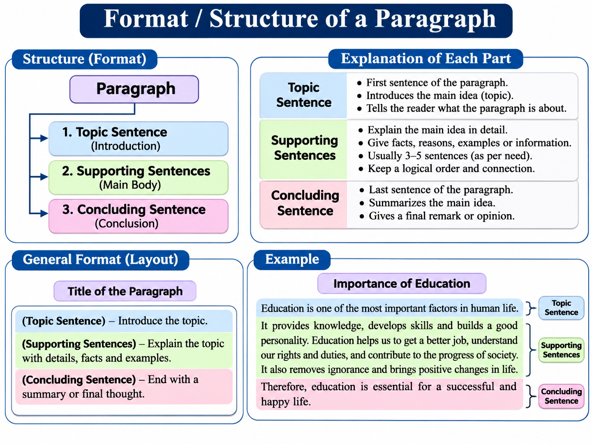
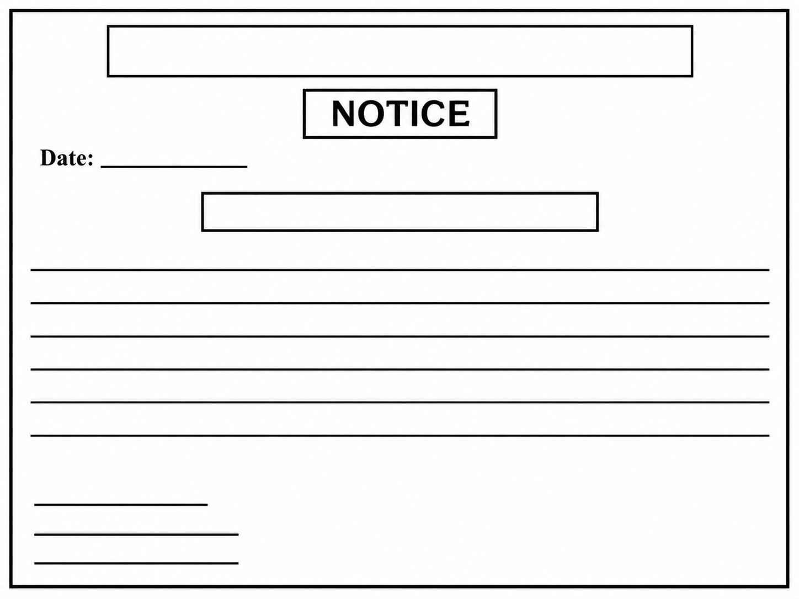
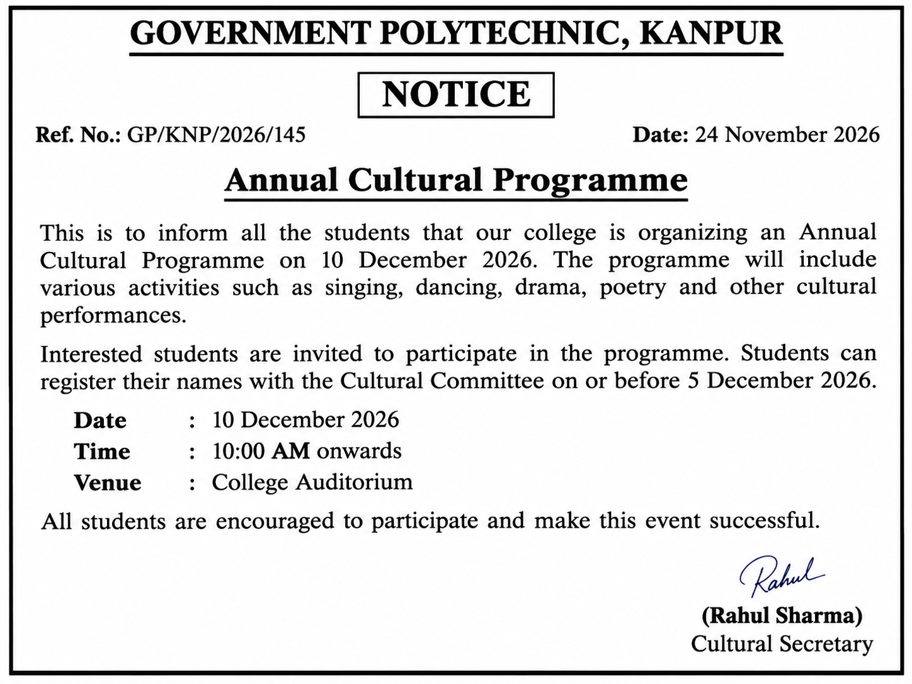
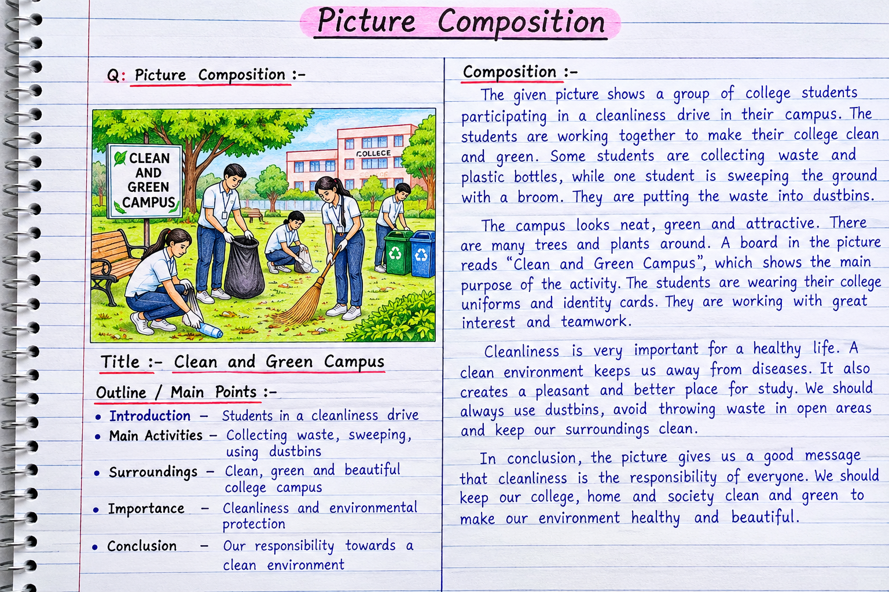

Paragraph Writing is an important part of English communication and writing skills. It is the process of expressing ideas, thoughts, information, or opinions about a particular topic in a group of related sentences. All the sentences in a paragraph are connected with one central idea and arranged in a logical order.
A good paragraph should be clear, meaningful, well-organized, and grammatically correct. It should not contain unnecessary information or sentences unrelated to the main topic.
A well-written paragraph generally follows three main parts. These parts help organize ideas and make the paragraph easy to understand.
The topic sentence is usually the first sentence of a paragraph. It introduces the main topic and tells the reader what the paragraph is about.
Supporting sentences explain the main idea introduced in the topic sentence. They provide details, facts, reasons, examples, and important information related to the topic.
The concluding sentence is generally the last sentence of a paragraph. It summarizes the main idea and provides a proper ending to the paragraph.
A simple paragraph can be written using the following structure:

Education is one of the most important factors in human life. It plays a significant role in the development of individuals and society. Education provides knowledge, develops skills, and helps people understand the world around them. It teaches us discipline, honesty, responsibility, and good manners. An educated person can make better decisions and understand the difference between right and wrong. Education also provides opportunities for employment and helps people achieve their career goals. It removes ignorance, reduces poverty, and creates awareness about social problems. Schools, colleges, and universities are important institutions that provide education and prepare students for the future. Education is not limited to books and examinations; it also includes practical knowledge, experience, and moral values. Every child should get an opportunity to receive quality education regardless of their financial or social background. Education makes a person confident, independent, and responsible. Therefore, education is the foundation of a successful life and a developed nation.
Environmental pollution is one of the biggest problems in the modern world. It refers to the contamination of air, water, and land by harmful substances. The major causes of environmental pollution include industrial waste, vehicle emissions, plastic materials, deforestation, and the excessive use of chemicals. Air pollution causes breathing problems and other health issues. Water pollution makes rivers, lakes, and other water sources unsafe for humans and animals. Soil pollution reduces the fertility of agricultural land and affects plant growth. Environmental pollution also contributes to climate change and global warming. It affects humans, animals, birds, and the entire ecosystem. We can reduce pollution by planting more trees, using public transport, avoiding single-use plastics, recycling waste, and saving water and electricity. Industries should follow environmental rules and use proper waste-management systems. People should also create awareness about environmental protection. A clean environment is necessary for a healthy life. Therefore, everyone must work together to protect nature and make the Earth a better place to live.
A computer is one of the most useful inventions of modern science and technology. It is an electronic device that accepts data, processes it, stores information, and produces useful results. Computers are widely used in almost every field of life, including education, business, banking, healthcare, communication, and entertainment. In educational institutions, computers help students attend online classes, prepare assignments, search for information, and develop technical skills. In offices, they are used for maintaining records, preparing documents, calculating data, and managing business activities. Banks use computers for financial transactions and account management. Hospitals use them to maintain patient records and support medical investigations. Computers also make communication faster through email, video calls, and the internet. They can perform complex calculations accurately and store large amounts of information. However, excessive use of computers can cause eye strain, physical inactivity, and security problems. Computers should therefore be used carefully and responsibly. In conclusion, computers have become an essential part of modern life and have made our work faster, easier, and more efficient.
Discipline is an important quality that helps a person live a successful and organized life. It means following rules, maintaining self-control, and performing duties in a proper manner. Discipline teaches us punctuality, honesty, responsibility, and respect for others. A disciplined student attends classes regularly, completes assignments on time, follows teachers' instructions, and studies according to a proper timetable. Discipline is also necessary in professional and personal life. It helps employees complete their work efficiently and maintain good relationships with colleagues. Without discipline, people may waste their time and fail to achieve their goals. Discipline does not mean following rules only because someone forces us; it also means understanding our responsibilities and controlling our actions. Good habits such as waking up early, managing time, respecting elders, and completing daily tasks help develop discipline. It builds confidence and improves personality. Every successful person follows discipline in some form. Therefore, discipline is the key to success and should be developed from childhood.
Every person should have an aim in life because an aim gives direction and purpose to our efforts. It helps us decide what we want to achieve and encourages us to work hard. My aim in life is to become a successful and responsible professional. I want to gain good knowledge, develop practical skills, and build a career through continuous learning. I believe that success cannot be achieved without dedication, patience, and discipline. To achieve my aim, I will focus on my studies, improve my communication skills, and learn new technologies. I will also try to develop good habits and use my time properly. My parents and teachers motivate me to work hard and become a better person. I understand that there may be difficulties and challenges on the way, but I will face them with confidence and determination. I do not want to achieve success only for myself; I also want to support my family and contribute positively to society. A clear aim gives meaning to life and inspires us to move forward. Therefore, I will continue working sincerely to achieve my goal.
Time is one of the most valuable resources in human life. Once time has passed, it can never be brought back. Every person gets the same twenty-four hours in a day, but successful people use their time wisely. Time management helps us complete our work on schedule and achieve our goals. Students should make a proper timetable for studying, playing, and other activities. Employees should organize their work according to priorities and deadlines. Wasting time on unnecessary activities can create problems and reduce productivity. Good time management develops discipline, confidence, and responsibility. We should avoid postponing important tasks and complete them at the right time. Planning daily activities, setting priorities, and taking short breaks can help us use time effectively. Time is more valuable than money because money can be earned again, but lost time never returns. Therefore, we should respect time and use every moment carefully to make our lives meaningful and successful.
Notice Writing is an important form of written communication used to provide information about an event, announcement, meeting, competition, activity, or any important matter to a particular group of people. A notice is a short and formal written message that communicates necessary information in a clear and organized manner.
A notice should be brief, accurate, clear, and informative. It should contain only relevant information so that readers can understand the announcement quickly. Notice writing generally follows a fixed format and uses formal language.
The main objectives of notice writing are given below:
Notice writing follows a standard format. Every notice should contain the following important elements in the correct sequence.
At the top of the notice, write the name of the school, college, company, or organization issuing the notice. It identifies the authority responsible for the announcement.
Write the word NOTICE in capital letters below the institution's name. It should be clearly visible and preferably written in bold letters.
Mention the date on which the notice is issued. The date helps readers understand when the announcement was officially made.
Write a short and meaningful heading that clearly indicates the purpose of the notice. For example, Annual Function, Sports Competition, Educational Tour, or Cultural Programme.
The body is the main part of the notice. It contains all the necessary details related to the announcement. It should answer the important questions:
At the end of the notice, write the name and signature of the person issuing it. This may be the Principal, Head of Department, Event Coordinator, or Secretary.
Mention the official designation of the person issuing the notice, such as Principal, Cultural Secretary, Sports Secretary, or Event Coordinator.

The standard structure of a notice is given below:

While writing a notice, certain rules should be followed to make it effective and professional.
Notices are written for different purposes in educational institutions and organizations. Some common types are:
The following is a sample notice for an annual sports event:
GOVERNMENT POLYTECHNIC, KANPUR
NOTICE
Date: 25 November 2026
ANNUAL SPORTS DAY
All students are hereby informed that the Annual Sports Day of Government Polytechnic, Kanpur, will be held on 10 December 2026 at 10:00 a.m. on the college playground. Students who wish to participate in events such as races, long jump, volleyball, and other sports activities are requested to submit their names to the Sports Coordinator by 5 December 2026. All participants should report at the venue on time.
(Signature)
Sports Secretary
Government Polytechnic, Kanpur
This notice includes the institution's name, the word NOTICE, date, subject, event details, instructions, and the name and designation of the issuing authority.
Picture Composition is an important form of English writing in which a person observes a given picture and writes a meaningful description or composition based on it. The picture may show people, places, activities, objects, events, or a particular situation. The writer carefully observes the picture, understands what is happening, collects important ideas, and expresses them in the form of connected sentences and paragraphs.
Picture Composition is commonly used in school and college examinations to test the observation, imagination, thinking, and writing skills of students. It helps students describe a situation in their own words instead of simply copying information from another source.
The main objectives of picture composition are given below:
A good picture composition should have the following characteristics:
The following steps should be followed while writing a picture composition:
First, look at the given picture carefully. Observe all the important elements, such as people, animals, buildings, objects, activities, and surroundings. Try to understand what is happening in the picture.
After observing the picture, identify its main subject or central idea. For example, the picture may be related to education, cleanliness, nature, pollution, a village scene, a market, or a sports activity.
Think about the important information that can be included in the composition. You can use the following questions:
Before writing, arrange the collected points in a logical sequence. Generally, the composition can be divided into three parts:
Now write the composition using simple, clear, and grammatically correct sentences. Connect the sentences properly and use suitable vocabulary. Give an appropriate title to the composition.
After completing the composition, read it again. Check spelling, grammar, punctuation, and sentence structure. Make sure that the composition describes the given picture properly and does not contain unnecessary information.
Consider the following picture showing college students participating in a cleanliness drive on their campus.

The picture shows college students taking part in a cleanliness drive on their campus. They are collecting waste, cleaning the surroundings, and putting rubbish into dustbins. Such activities help keep the college environment neat, healthy, and pleasant.
A clean campus is important for the health and safety of students, teachers, and other staff members. Waste materials scattered on the ground can make the surroundings dirty and may spread diseases. Therefore, everyone should use dustbins and avoid throwing plastic wrappers, paper, and other waste in open areas.
Students play an important role in maintaining cleanliness. They can participate in cleanliness campaigns, plant trees, save water, and encourage others to keep the campus clean. The college administration should also provide sufficient dustbins and arrange proper waste disposal.
The cleanliness drive teaches us that keeping our surroundings clean is not the duty of one person; it is the responsibility of everyone. A clean and green campus creates a positive atmosphere for learning. We should make cleanliness a regular habit and work together to protect our environment.
Short paragraphs present the main ideas of a topic in a brief and clear manner. The following examples cover some important topics. For more detailed paragraphs, refer to the Important Paragraph Topics in Question 1.
Trees are essential for life on Earth. They provide oxygen, fruits, wood, shade, and shelter to birds and animals. They absorb carbon dioxide and help maintain the balance of nature. Trees also prevent soil erosion and make the environment beautiful. We should plant more trees and protect forests. Cutting trees unnecessarily causes environmental problems. Therefore, every person should contribute to protecting trees and making the Earth greener.
Good health is one of the greatest blessings in life. A healthy person can study, work, and enjoy daily activities with energy. We can maintain good health by eating a balanced diet, drinking clean water, exercising regularly, and getting enough sleep. Personal hygiene and a clean environment are also important. We should avoid harmful habits and take proper care of our bodies. Money is useful, but it cannot replace good health. Therefore, we should give importance to a healthy lifestyle.
Digital India is an initiative that encourages the use of digital technology in the country. Digital services make it easier for people to access information, education, banking, and government facilities. Online payments, digital documents, and internet services save time and make many tasks convenient. Students can use digital platforms to learn new skills and access study materials. However, people should use technology safely and protect their personal information. Digital literacy is important so that everyone can benefit from these services.
A proverb is a short and well-known saying that expresses a general truth or gives advice. Some commonly used English proverbs are given below:
A quotation is a memorable statement that expresses an idea, thought, or message. The following short quotations can be used in speeches, essays, and written answers: